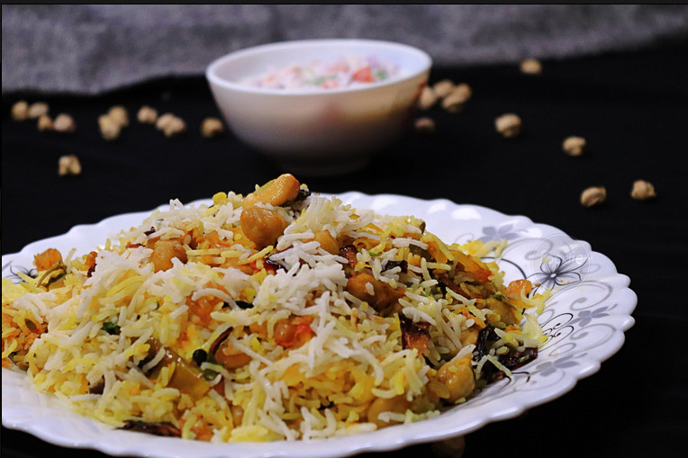

Home
Biriyany Recipe

Description:
Biriyani is a historical dish for the people of Southeast ASIA. It is densely popular among the people. It has a rich HISTORY.
Biriyani usually contains Rice, Meat, Potato and other ingredients. It is among on of the best heavy category food.
ingredients:
- Rice
- Meat
- Milk
- Yogart
- Onion
- Potato
- Sugar
- chili
- Biriyani Moshal
- Kishmish
- Alu bokhra
Follow the Steps:
- First step should be preparing all the ingredients and make them ready to cook.
- Then fry some onion until they become grey color and then take them off from the pan and mix some sugar when the grilled onion is cold.
- Then boil the potato and when it is half boiled take them off and add some salt and fry them until become grey color.
- Next step is making the meat. So for this fry the onion and put some ginger also. When the onion is grey put the meat on the pan and keep frying them in full heat. After 10 minutes pour some milk in it and cover the pan. Open the cover 3 minutes later and add Yogart in it and mix it properly. Then add the biriyani Moshal and salt as much as needed. Now fry it until the gravy becomes thicker.
- After done with the meat. Take a big pot or pan to cook the rice. So put some oil and fry the rice for 10 minutes with medium heat. Then add some milk in it and pour sufficient water "Normally double the amount of the rice( 1kg rice - 2 ltr water) then add sufficient amount of salt and then cover the pan.
- When water is vaporized fully take off the pan from the gas stove and add all the ingredient you prepared at the beginning. Such as, Alu Bokhra, Kishmish, fried potato, Chili, and the gravy.Then mix it properly
- After that put the pan on the gas stove again with minimal heat and let it cooked for 10 to 15 minutes. Try to shake the pan once or twice in between.
- Turn off the gas stove and your Biriyani is ready to serve.
- Good luck. Happy eating.